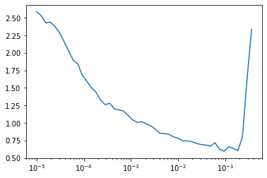

#| export
class SGD:
def __init__(self, params, lr, wd=0.):
self.params = list(params)
self.lr = lr
self.wd = wd
self.i = 0
def step(self): # this is the method that get's called by the Learner
with torch.no_grad():
for p in self.params:
self.reg_step(p) # first add regularization
self.opt_step(p) # then do the actual step
self.i +=1
def opt_step(self, p):
p -= p.grad * self.lr # regular step
def reg_step(self, p):
if self.wd != 0: # only regularize when the weight decay parameter is set
p *= 1 - self.lr*self.wd # update the weights as described above
def zero_grad(self):
for p in self.params:
p.grad.data.zero_()nntrain (4/n): Accelerated optimization
code
neural network
deep learning
In this series, I want to discuss the creation of a small library for training neural networks: nntrain. It’s based off the excellent part 2 of Practical Deep Learning for Coders by Jeremy Howard, in which from lessons 13 to 18 (roughly) the development of the miniai library is discussed.
The library will build upon PyTorch. We’ll try as much as possible to build from scratch to understand how it all works. Once the main functionality of components are implemented and verified, we can switch over to PyTorch’s version. This is similar to how things are done in the course. However, this is not just a “copy / paste” of the course: on many occasions I take a different route, and most of the code is my own. That is not to say that all of this is meant to be extremely innovative, instead I had the following goals:
- Deeply understand the training of neural networks with a focus on PyTorch
- Try to create an even better narrative then what‚Äôs presented in FastAI üôâü§∑‚Äç‚ôÇÔ∏èüôà
- Get hands-on experience with creating a library with
nb_dev
nb_dev is another great project from the fastai community, which allows python libraries to be written in jupyter notebooks. This may sound a bit weird since the mainstream paradigm is to only do experimental work in notebooks. It has the advantage though that we can create the source code for our library in the very same environment in which we want to experiment and interact with our methods, objects and structure while we are building the library. For more details on why this is a good idea and other nice features of nb_dev, see here.
So without further ado, let’s start with where we left off in the previous post:
End of last post:
In the last post we build a convolutional neural network, loaded the Fashion-Mnist data using our Dataloaders module, and trained it using the Learner module. We created a module which helped to understand the fine-print of training a model, more specifically by understanding the activations throughout the network during training.
We finally reached a performance of around 89% (evaluation) accuracy by training 5 epochs. In this post, we are going to look closely into how a model is learning: the step in which we update the weights after the backward pass in the training loop.
Updating the weights takes the form of:
\[ w_t = w_{t-1} - lr \cdot grad^{w}_{t-1} \] or in more pseudocode style syntax: \[ w \leftarrow w - lr \cdot grad^{w} \]
Before we dive into different versions of this update step and it’s implications, I would like to have a good look at this remarkebly simple formula. Specifically, it’s important that the change to the weights from one step to another is composed of the product of the learning rate \(lr\) and the gradient of the loss with respect to the weight we are updating: \(grad^w\). And since it’s a product, doubling one and reducing the other by a factor of 2, cancel each other out.
For example, consider some training setup with some loss function \(loss\) and some learning rate \(lr\). If we would change our loss function by adding a factor of 2: \(loss_1 = 2 \cdot loss\) this would have the effect that the gradients would also double. Very similiar to how if
\[\begin{aligned} f(x) &= x^2 &&\rightarrow f'(x) = 2x \\ g(x) &= 2f(x) = 2x^2 &&\rightarrow g'(x) = 4x = 2f'(x) \end{aligned}\]And since learning rate and gradients are multiplied in the weight update, we could offset the doubling of the loss by reducing the learning rate by 2. It’s thus important to realize how these components interact.
Weight decay
Weight decay is a very common regularization technique. Regularization is meant to reduce overfitting. When a model is overfitting, it basically has learned the structure of the training set to such a degree (e.g. memorized) that it performs very well on the training set, but performance is degraded on the validation set. This means the model is no longer generalizing well to data it was not trained on. And since we are always interested in using a model for making predictions on data it hasn’t seen (e.g. inference), this is an extremely important thing to be aware of.
Weight decay takes the simple form of adding a component to the loss which penalizes large weights:
\[ loss_{wd} = loss + c\sum{w_i^2} \]
And since this simple sum we are adding has no interaction terms between weights, we simply get:
\[\begin{aligned} grad_{wd} &= grad + 2c\cdot w \\ &= grad + d \cdot w \end{aligned}\]And then going back to updating the weights:
\[\begin{aligned} w_{wd} &\leftarrow w_{wd} - lr \cdot grad_{wd} \\ &= w_{wd} - lr \cdot (grad + d \cdot w_{wd}) \\ &= w_{wd} - lr \cdot grad - lr \cdot d \cdot w_{wd} \\ &= w_{wd}(1 - lr \cdot d) - lr \cdot grad \end{aligned}\]If we compare this expression to the regular update step: \(w \leftarrow w - lr \cdot grad^{w}\), we find that we can simply multiply the weights by \((1 - lr \cdot d)\) before we do the step:
Let’s try it out:
Code
from datasets import load_dataset,load_dataset_builder
from nntrain.dataloaders import DataLoaders, hf_ds_collate_fn
from nntrain.learner import *
from nntrain.activations import *Code
import torchvision.transforms.functional as TF
import torch
import torch.nn as nn
import torch.nn.functional as F
from operator import attrgetter
from functools import partial
import fastcore.all as fc
import math
import torcheval.metrics as tem
import matplotlib.pyplot as plt
import random
import numpy as npname = "fashion_mnist"
ds_builder = load_dataset_builder(name)
hf_dd = load_dataset(name)
bs = 1024
collate = partial(hf_ds_collate_fn, flatten=False)
dls = DataLoaders.from_hf_dd(hf_dd, batch_size=bs, collate_fn=collate)
set_seed(1)
# model and initializaton
model = cnn_layers().apply(init_weights)
# normalization
xb, yb = next(iter(dls.train))
norm = NormalizationS(xb.mean(), xb.std())
# subscribers
subs = [norm,
ProgressS(True),
MetricsS(accuracy=tem.MulticlassAccuracy()),
DeviceS(device)]
# Remember that the optim_func get's initialized during fit()
# https://github.com/lucasvw/nntrain/blob/main/nntrain/learners.py#L53C65-L53C65
optim_func = partial(SGD, wd=0)
lr = 0.4
l = MomentumLearner(model, dls, F.cross_entropy, optim_func, lr, subs)
l.fit(5)Downloading and preparing dataset fashion_mnist/fashion_mnist (download: 29.45 MiB, generated: 34.84 MiB, post-processed: Unknown size, total: 64.29 MiB) to /root/.cache/huggingface/datasets/fashion_mnist/fashion_mnist/1.0.0/8d6c32399aa01613d96e2cbc9b13638f359ef62bb33612b077b4c247f6ef99c1...
Dataset fashion_mnist downloaded and prepared to /root/.cache/huggingface/datasets/fashion_mnist/fashion_mnist/1.0.0/8d6c32399aa01613d96e2cbc9b13638f359ef62bb33612b077b4c247f6ef99c1. Subsequent calls will reuse this data.| epoch | mode | loss | accuracy |
|---|---|---|---|
| 0 | train | 0.590 | 0.788 |
| 0 | eval | 0.406 | 0.846 |
| 1 | train | 0.350 | 0.872 |
| 1 | eval | 0.365 | 0.862 |
| 2 | train | 0.305 | 0.888 |
| 2 | eval | 0.349 | 0.871 |
| 3 | train | 0.280 | 0.896 |
| 3 | eval | 0.342 | 0.876 |
| 4 | train | 0.261 | 0.903 |
| 4 | eval | 0.308 | 0.889 |
Momentum
Momentum has to do with smartly navigating the loss surface. The loss surface is a high dimensional plain (manifold) where each dimension is a single parameter in the model. Since humans are not made for thinking beyond 3 dimensions, let’s thus quickly replace this by a mental image with just 3 dimensions. Let the loss surface have just 2 parameters that are put on the x and y dimensions, and let z represent the value of our loss function.
Training a neural network is all about finding a low (the lowest) spot on this surface, e.g. a point in this space in which the parameters (x and y) take on a value so that the loss (z direction) is low.
To find such a spot, we have to navigate this surface. Sometimes it might be difficult to find this spot from the point where we are, since the lowest value might lay behind a hill. Realize that we also never “see” the complete surface, we can only navigate it by computing gradients from the point where we currently are. We can draw an analogy of a astronaut being dropped in a completely alien world, having a need to find water (the lowest point on the surface) as quickly as possible (because of limitted oxygen supply) with a visibility of only 1 meter.
So what’s our strategy to find water asap? With SGD we compute the gradient based on the contributions of each sample in the minibatch. Then we take a small step in this direction (of size: learning rate x gradient). And we keep repeating this. But imagine that each time we compute this gradient, we find that it’s more or less in the same direction. Would it then not make sense to maybe take a bit of a larger step? This is the intuition behind momentum, don’t just consider the gradient at the current position, but get some sense of the surrounding surface by inferring from the past couple of computed gradients. The following image shows this also nicely:

To implement, we simply do:
\[\begin{aligned} w &\leftarrow w - lr \cdot grad\_avg \end{aligned}\]The definition of \(grad\_avg\) takes different forms. In PyTorch SGD it’s simply:
\[ grad\_avg \leftarrow grad + \mu \cdot grad\_avg \]
And this is also exactly the way we previously implemented in the MomentumLearner. Additionally PyTorch defines a dampening parameter \(\tau\) (defaulting to zero):
\[ grad\_avg \leftarrow (1 - \tau) grad + \mu \cdot grad\_avg \]
Jeremy Howard from Fastai suggests we take a weighted average between the grad and the running average. This is equivalent to setting \(\tau = \mu\) (dampening = momentum) in PyTorch:
\[ grad\_avg \leftarrow (1-c) grad + c \cdot grad\_avg \]
#| export
class Momentum(SGD):
def __init__(self, params, lr, wd=0., mom=0.9):
super().__init__(params, lr=lr, wd=wd)
self.mom=mom
def opt_step(self, p):
if not hasattr(p, 'grad_avg'): p.grad_avg = torch.zeros_like(p.grad)
p.grad_avg = p.grad_avg*self.mom + p.grad*(1-self.mom)
p -= self.lr * p.grad_avgset_seed(1)
model = cnn_layers().apply(init_weights)
optim_func = Momentum
lr = 1.5
l = Learner(model, dls, F.cross_entropy, optim_func, lr, subs)
l.fit(5)| epoch | mode | loss | accuracy |
|---|---|---|---|
| 0 | train | 0.606 | 0.784 |
| 0 | eval | 0.439 | 0.838 |
| 1 | train | 0.359 | 0.869 |
| 1 | eval | 0.372 | 0.861 |
| 2 | train | 0.322 | 0.881 |
| 2 | eval | 0.372 | 0.864 |
| 3 | train | 0.293 | 0.892 |
| 3 | eval | 0.329 | 0.878 |
| 4 | train | 0.271 | 0.900 |
| 4 | eval | 0.314 | 0.886 |
Geoffrey Hinton in this lecture on Momentum mentions that one problem with using plain SGD with a large learning rate is that you can get divergent oscillations if you try to travel down a long and narrow canyon. This would be similar to what happens on the left hand side of the figure above, but now with a learning rate so big that we actually diverge from the goal. By adding momentum he argues, it’s easier to find the “dominant” (horizontal) direction and we can thus increase the learning rate without causing divergent oscillations.
One issue he describes, is that in the beginning of training when the gradients are still large, the momentum should be kept much smaller since otherwise the updates become just too big. One way to deal with these would be to change the momentum during training (but more about that later when we start looking into schedulers) or by using something like RMSProp:
RMSProp
RMSProp is a technique (first?) described by Geoffrey Hinton in an online MOOC. Jeremy Howard describes RMSProp as “Momentum, but with the squares of the gradient”. I personally think this is a rather bad explanation, since this is not at all what’s going on. Instead it’s a technique that is concerned with the differences in magnitude of the gradients of different weights. This leads to weights getting updated at very different “speeds”. E.g. if you have one weight which gradient is 10 times the gradient of another, that weight get’s an update that’s 10 times as large as the other one.
This can exist between weights at one single step, but also between gradients of a single weight during different times in training.
The reason for this is of course that the learning rate is equal at all times for all parameters. RMSProp is a technique which scales the gradients inversely to the (averaged out) magnitude of the gradient:
\[ w \leftarrow w - lr \cdot \frac{grad}{\sqrt{acc\_sqrd\_grad}} \]
where
\[ acc\_sqrd\_grad = c \cdot acc\_sqrd\_grad + (1-c) grad^2 \]
From which it should be clear that using RMSprop has a large impact on the weight updates, you will thus have to recalibrate your learning rate.
#| export
class RMSProp(SGD):
def __init__(self, params, lr, wd=0., sqr_mom=0.99, eps=1e-5):
super().__init__(params, lr=lr, wd=wd)
self.sqr_mom = sqr_mom
self.eps = eps
def opt_step(self, p):
if not hasattr(p, 'sqr_avg'):
p.sqr_avg = p.grad**2
p.sqr_avg = p.sqr_avg*self.sqr_mom + (1-self.sqr_mom)*p.grad**2
p -= self.lr * p.grad/(p.sqr_avg.sqrt() + self.eps)set_seed(1)
model = cnn_layers().apply(init_weights)
optim_func = RMSProp
lr = 3e-3 # much smaller learning rate!
l = Learner(model, dls, F.cross_entropy, optim_func, lr, subs)
l.fit(5)| epoch | mode | loss | accuracy |
|---|---|---|---|
| 0 | train | 0.699 | 0.754 |
| 0 | eval | 0.472 | 0.831 |
| 1 | train | 0.421 | 0.847 |
| 1 | eval | 0.452 | 0.837 |
| 2 | train | 0.373 | 0.862 |
| 2 | eval | 0.387 | 0.858 |
| 3 | train | 0.344 | 0.874 |
| 3 | eval | 0.378 | 0.860 |
| 4 | train | 0.322 | 0.881 |
| 4 | eval | 0.352 | 0.875 |
Adam
Adam is probably the most common optimizer used in practice, and is nothing more then the combination of RMSProp and Momentum:
\[ w \leftarrow w - lr \cdot \frac{avg\_grad}{\sqrt{acc\_sqrd\_grad}} \]
#| export
class Adam(SGD):
def __init__(self, params, lr, wd=0., beta1=0.9, beta2=0.99, eps=1e-5):
super().__init__(params, lr=lr, wd=wd)
self.beta1,self.beta2,self.eps = beta1,beta2,eps
def opt_step(self, p):
if not hasattr(p, 'avg'):
p.avg = torch.zeros_like(p.grad.data)
p.sqr_avg = torch.zeros_like(p.grad.data)
p.avg = self.beta1*p.avg + (1-self.beta1)*p.grad
unbias_avg = p.avg / (1 - (self.beta1**(self.i+1)))
p.sqr_avg = self.beta2*p.sqr_avg + (1-self.beta2)*(p.grad**2)
unbias_sqr_avg = p.sqr_avg / (1 - (self.beta2**(self.i+1)))
p -= self.lr * unbias_avg / (unbias_sqr_avg + self.eps).sqrt()set_seed(1)
model = cnn_layers().apply(init_weights)
optim_func = Adam
lr = 6e-3
l = Learner(model, dls, F.cross_entropy, optim_func, lr, subs)
l.fit(5)| epoch | mode | loss | accuracy |
|---|---|---|---|
| 0 | train | 0.609 | 0.783 |
| 0 | eval | 0.449 | 0.838 |
| 1 | train | 0.366 | 0.865 |
| 1 | eval | 0.373 | 0.866 |
| 2 | train | 0.320 | 0.882 |
| 2 | eval | 0.365 | 0.863 |
| 3 | train | 0.290 | 0.893 |
| 3 | eval | 0.325 | 0.881 |
| 4 | train | 0.269 | 0.902 |
| 4 | eval | 0.323 | 0.882 |
Learning Rate Schedulers
Now let’s look at learning rate schedulers: these are objects that change important parameters such as the learning rate and momentum during training. The OneCycleLR scheduler for example starts with a low learning rate, then increases it to a maximum value and then anneales it back to the lower value.
The idea being that initially, when our weights are random, we don’t want to take too large steps. As the weights are getting somewhat reasonable, we speed up the learning and once we arrive at a better solution because of this, we decrease the learning rate again to make sure we can squeeze out the last bit of performance gain:
opt = torch.optim.SGD(model.parameters(), lr=3e-3)
# Every scheduler has the concept of steps.
# Either specified as done here or as "epochs" and "steps_per_epoch" (=# of batches) as two separate args
steps = 100
sch = torch.optim.lr_scheduler.OneCycleLR(opt, max_lr=6e-2, total_steps=steps)
# The scheduler has a convenience method for getting the current learning rate
lrs = [sch.get_last_lr()]
# For other parameters such as momentum, we have to look into the optimizer itself
moms = [opt.param_groups[0]['momentum']]
for i in range(100):
opt.step()
sch.step() # calling step() on the scheduler updates the parameters of the optimizer
lrs.append(sch.get_last_lr())
moms.append(opt.param_groups[0]['momentum'])
fig, axs = plt.subplots(1,2, figsize=(10,5))
axs[0].plot(lrs);
axs[0].set_title('learning rate');
axs[1].plot(moms);
axs[1].set_title('momentum');Besides the cycling of the learning rate, the momentum is cycled inversely with the OneCycleLr scheduler
Let’s see if we can create a Subscriber that enables the use of Schedulers in our framework:
#| export
class SchedulerS(Subscriber):
def __init__(self, scheduler_class):
self.scheduler_class = scheduler_class
# intialize the scheduler instance after the optimizer has been intialized
def before_fit(self, learn):
self.scheduler = self.scheduler_class(learn.opt)
# step the scheduler after the optimizer has stepped
def after_step(self, learn):
self.scheduler.step()set_seed(1)
epochs = 5
N = len(dls.train)
model = cnn_layers().apply(init_weights)
lr = 6e-2
sch = partial(torch.optim.lr_scheduler.OneCycleLR, max_lr=lr, epochs=epochs, steps_per_epoch=N)
subs_sch = subs + [SchedulerS(sch)]
l = Learner(model, dls, F.cross_entropy, torch.optim.Adam, lr, subs_sch)
l.fit(epochs)| epoch | mode | loss | accuracy |
|---|---|---|---|
| 0 | train | 0.679 | 0.762 |
| 0 | eval | 0.818 | 0.763 |
| 1 | train | 0.386 | 0.859 |
| 1 | eval | 0.372 | 0.860 |
| 2 | train | 0.298 | 0.889 |
| 2 | eval | 0.321 | 0.880 |
| 3 | train | 0.244 | 0.910 |
| 3 | eval | 0.278 | 0.894 |
| 4 | train | 0.208 | 0.923 |
| 4 | eval | 0.265 | 0.902 |
And that helps us to reach 90% accuracy! Not bad for a simple convolutional neural network
ResNet
Next, let’s see if we can increase the depth of the model even more: we can use a reduced stride (=1) in the first convolution so that we don’t reduce the pixel-grid. We can thus add one more convolution at the end, to end up with a 1x1 pixel grid:
def cnn_layers_more_depth():
return nn.Sequential( # 28x28
conv_block(1 , 8, stride=1), # 28x28
conv_block(8 ,16), # 14x14
conv_block(16,32), # 7x7
conv_block(32,64), # 4x4
conv_block(64,128), # 2x2
conv_block(128,10, norm=False, act=False), # 1x1
nn.Flatten())
set_seed(1)
model = cnn_layers_more_depth().apply(init_weights)
l = Learner(model, dls, F.cross_entropy, torch.optim.Adam, lr, subs_sch)
l.fit(epochs)| epoch | mode | loss | accuracy |
|---|---|---|---|
| 0 | train | 0.571 | 0.801 |
| 0 | eval | 0.600 | 0.821 |
| 1 | train | 0.325 | 0.880 |
| 1 | eval | 0.399 | 0.864 |
| 2 | train | 0.248 | 0.909 |
| 2 | eval | 0.302 | 0.894 |
| 3 | train | 0.192 | 0.929 |
| 3 | eval | 0.234 | 0.914 |
| 4 | train | 0.143 | 0.948 |
| 4 | eval | 0.228 | 0.919 |
The question arises whether we can keep increasing the depth of our model to boost our performance. Since we already exhausted the pixel grid, the only way would be to add more stride 1 convolutions.
However, this doesn’t improve performance. Kaiming et al found in “Deep Residual Learning for Image Recognition” that deeper CNN models often perform worse then shallow CNN models. This is surprising since a deeper model can be understood as a superset of a more shallow model. It’s easy to see this if we consider that a deeper model can just duplicate the shallow model in it’s initial layers matching the layers of the shallow model, and keep it’s excess layers as an identity, passing through the data as is. But the observation they made, is that during training deeper model are performing worse and thus this “optimum” is apparently not found while training the deeper model.
To help the training process of deeper models, they came up with an architecture which should be able to more easily replicate the shallow network. And the way they did this, was by adding skip connections:
So instead of having a fully sequential model, they added these identity skip connections which connects both the input to and the output of the convolutional path. They argued that by doing so, it would be trivial for the model to forward the data without modifying it. This way, the model could use the convolutional path for the depth of “shallow” model, and use the skip connections for the remaining layers that only the “deep” model has.
Why a double convolutional layer? For that we come back to the idea of adding stride 1 convolution to increase the depth of our model. In the architecture described above, the first convolutional layer is a stride 1 convolution (keeping the pixel grid constant) and increases the number of filters. The second convolution is a stride 2 convolution which reduces the pixel grid by a factor of 2, but keeps the number of filters constant. The first convolution is thus expanding the data, and the second convolution compresses it, this is different from the standard ResBlock implementation in Pytorch and works significantly better in my experiments.
The name for the block shown above is a ResBlock, and a model that is using them is called a ResNet. Res is short for residual, and that name becomes apparent when we look at this block in the following way:
\[\begin{aligned} & y &&= x + conv_2(conv_1(x)) \\ & y - x &&= conv_2(conv_1(x)) \\ & residual &&= conv_2(conv_1(x)) \end{aligned}\]The term \(y-x\) is often called “the residual” in statistics. Now let’s see how we can create such a ResBlock, we start with the convolutional path:
#| export
def conv_conn(in_c, out_c, kernel_size=3, stride=2):
return nn.Sequential(
conv_block(in_c, out_c, kernel_size=kernel_size, stride=1, act=True, norm=True),
conv_block(out_c, out_c, kernel_size=kernel_size, stride=stride, act=False, norm=True)
)And let’s create the ResBlock with a couple of notes upfront:
- We can only use a “true” identity connection (
y_id = x) under the condition that the convolutions don’t change the number of filters (in_c = out_c) nor the pixel grid (stride=1). In other words, we can only use a true identity connection if the trailing 3 dimensions in our batch NCHW stay constant. If this is not the case, we have to “match up” the identity connection as simple as possible to these new dimensions:- If the number of filters has changed we thus add a convolution with stride and kernel size equal to 1, only changing the number of channels.
- If the pixel grid has changed (halved in size due to a stride 2 convolution in the convolutional connection), we reduce the size of pixel grid in the same way, making use of a
AvgPool2dlayer, effectively averaging with a 2x2 kernel size.
- Note also that the second convolution doesn’t have an activation, this is because we want to apply the activation after summing both the contributions from the identity path and the convolutional path
#| export
class ResBlock(nn.Module):
def __init__(self, in_c, out_c, stride=2):
super().__init__()
self.in_c = in_c
self.out_c = out_c
self.stride = stride
self.conv_conn = conv_conn(in_c, out_c, stride=stride)
self.identity_conn = conv_block(in_c, out_c, kernel_size=1, stride=1, act=False, norm=False)
self.pooling = torch.nn.AvgPool2d(2, ceil_mode=True)
self.relu = nn.ReLU()
def forward(self, x):
y_conv = self.conv_conn(x)
if self.in_c == self.out_c: y_id = x
elif self.stride == 1:
y_id = self.identity_conn(x)
else:
y_id = self.pooling(self.identity_conn(x))
return self.relu(y_conv + y_id)Creating the ResNet is very similar to what we have done before, we basically replace the conv_block with a ResBlock. Additionally we change the head of the model: First we flatten, then we use a linear layer to map to the required dimensions (10 output categories) and we conclude with a final BatchNorm layer.
Note
Although the final BatchNorm layer has a positive impact on performance, I don‚Äôt have a good intuition as to the reasons why. I would think that the distributions of logits would be not very gaussian in an ideal setting: the correct categories should get much higher outputs then the other ones. Perhaps this works in some second order effect as regularization, or perhaps it has to do with the scaling that the BatchNorm layer does after the normalization. If anybody has a good intuition for this, please let me knowüôè
#| export
def resnet():
return nn.Sequential( # pixel grid input: 28x28
ResBlock(1 , 8, stride=1), # 28x28
ResBlock(8 ,16), # 14x14
ResBlock(16,32), # 7x7
ResBlock(32,64), # 4x4
ResBlock(64,128), # 2x2
ResBlock(128,256), # 1x1
nn.Flatten(), # flatten to 256 features
nn.Linear(256, 10, bias=False), # linear layer to map to 10 output features
nn.BatchNorm1d(10) # final batchnorm layer
)set_seed(1)
model = resnet().apply(init_weights)
lrfind = LRFindS()
lrfind_subs = [norm,
DeviceS(device),
lrfind]
start_lr = 1e-5
l = Learner(model, dls, F.cross_entropy, torch.optim.Adam, start_lr, lrfind_subs)
l.fit(1)
lrfind.plot()
set_seed(1)
model = resnet().apply(init_weights)
lr = 1e-2
sch = partial(torch.optim.lr_scheduler.OneCycleLR, max_lr=lr, epochs=epochs, steps_per_epoch=N)
subs_sch = subs + [SchedulerS(sch)]
l = Learner(model, dls, F.cross_entropy, torch.optim.Adam, lr, subs_sch)
l.fit(epochs)| epoch | mode | loss | accuracy |
|---|---|---|---|
| 0 | train | 0.815 | 0.783 |
| 0 | eval | 0.578 | 0.846 |
| 1 | train | 0.399 | 0.889 |
| 1 | eval | 0.372 | 0.885 |
| 2 | train | 0.282 | 0.914 |
| 2 | eval | 0.292 | 0.906 |
| 3 | train | 0.212 | 0.934 |
| 3 | eval | 0.257 | 0.918 |
| 4 | train | 0.159 | 0.953 |
| 4 | eval | 0.237 | 0.927 |
Which reaches a score of almost 93% within 5 epochs!
Parameters and MACs
Now that we are able to create fairly deep models, it’s a good idea to be able to track the memory footprint and the amount of compute that is involved in doing a single forward pass. To track the memory, we can look at the amount of parameters of each layer, and for the compute we can try to estimate something equivalent to Multiply–accumulate operations (MACs). Let’s create a small Subscriber that tracks thes stats by running one single batch and then cancels the fit:
#| export
class ModelMonitorS(Subscriber):
def __init__(self, modules): self.modules = modules
def before_fit(self, learn):
self.hooks = [Hook(i, module, partial(self.record_stats, learn)) for i, module in enumerate(self.modules)]
def record_stats(self, learn, hook, layer, inp, outp):
if learn.model.training:
hook.nparams = sum(submodule.numel() for submodule in layer.parameters())
if isinstance(layer, ResBlock):
# K × K × Cin × Hout × Wout × Cout source=https://machinethink.net/blog/how-fast-is-my-model/
mac_conv1 = 9 * layer.in_c * inp[0].shape[2] * inp[0].shape[3] * layer.out_c
mac_conv2 = 9 * layer.out_c * outp.shape[2] * outp.shape[3] * layer.out_c
hook.mac = (mac_conv1 + mac_conv2) / 1e6
if layer.stride != 1:
# Add identity conv
hook.mac += (layer.in_c * outp.shape[2] * outp.shape[3] * layer.out_c / 1e6)
else:
hook.mac = hook.nparams / 1e6
hook.batch_size = inp[0].shape[0]
hook.in_shape = list(inp[0].shape[1:])
hook.out_shape = list(outp.shape[1:])
def after_batch(self, learn):
for h in self.hooks: h.remove()
raise CancelFitException # Only run this for a single batch, then cancel
def __repr__(self):
out = f'{"layer":<20} : {"input":<20} : {"output":<20} : {"# params":>10} : {"# MACs":>10}\n'
total_params = 0
total_mac = 0
for h in self.hooks:
out += f'{h.layer_name:<20} : {str(h.in_shape):<20} : {str(h.out_shape):<20} : {h.nparams:>10d} : {h.mac: 10.1f}\n'
total_params += h.nparams
total_mac += h.mac
return f'{"Total parameters:":<20}{total_params:>10d} \n{"Total MACs:":<20}{total_mac:10.1f} \n\n' + outmodel = resnet().apply(init_weights)
modules = [module for module in model.modules() if isinstance(module, (ResBlock, nn.Linear, torch.nn.BatchNorm1d))]
monitor = ModelMonitorS(modules)
l = Learner(model, dls, F.cross_entropy, torch.optim.Adam, lr, [monitor])
l.fit(1)
monitorTotal parameters: 1227900
Total MACs: 8.4
layer : input : output : # params : # MACs
0_ResBlock : [1, 28, 28] : [8, 28, 28] : 696 : 0.5
1_ResBlock : [8, 28, 28] : [16, 14, 14] : 3664 : 1.4
2_ResBlock : [16, 14, 14] : [32, 7, 7] : 14496 : 1.4
3_ResBlock : [32, 7, 7] : [64, 4, 4] : 57664 : 1.5
4_ResBlock : [64, 4, 4] : [128, 2, 2] : 230016 : 1.8
5_ResBlock : [128, 2, 2] : [256, 1, 1] : 918784 : 1.8
6_Linear : [256] : [10] : 2560 : 0.0
7_BatchNorm1d : [10] : [10] : 20 : 0.0From which we see how data flows through the model, where most parameters are and where most compute is being spend. Although the MACs computation isn’t perfectly valid, it gives a good indication. It especially shows:
- most parameters are in later layers, those are the layers that cost most memory. In fact the final ResBlock uses more memory as all earlier ResBlocks combined!
- this is also where most compute is being used, although the differences between earlier layers is much less pronounced then for the memory footprint, the reason for this is that the pixel grid is reduced a lot in those later layers
Augmentation
We have finally come to the point of data augmentation. Once you have a good model, you would ideally train for much longer times. When doing so, the problem that arises is that of overfitting. Which we described before as the tendency of the model to start to memorize our training data and no longer generalize well to the validation set.
To overcome this, data augmentation is used to increase the variety in the training data. For example we can rotate the images, or (horizontally or vertically) flip the image. For such augmentations the label stays the same, since a rotated image of a shoe is still a shoe, but there exist also augmentations that for example mix images, and thus also the labels are altereed. There are great libraries out there such as Albumentations with a huge variety of transformations that can be applied to images, so we won’t be going into the full details. But let’s at least figure out how we can build this into our framework.
#| export
class AugmentS(Subscriber):
def __init__(self, transform):
self.transform = transform
def before_batch(self, learn):
if learn.model.training: # augmentations are only applied to the training data
learn.batch[0] = self.transform(learn.batch[0])from torchvision import transforms
augs = nn.Sequential(transforms.RandomHorizontalFlip(),
transforms.RandomCrop(size=28, padding=1))set_seed(1)
model = resnet().apply(init_weights)
epochs=20
lr = 1e-2
sch = partial(torch.optim.lr_scheduler.OneCycleLR, max_lr=lr, epochs=epochs, steps_per_epoch=N)
subs_sch = subs + [SchedulerS(sch), AugmentS(augs)]
l = Learner(model, dls, F.cross_entropy, torch.optim.Adam, lr, subs_sch)
l.fit(epochs)| epoch | mode | loss | accuracy |
|---|---|---|---|
| 0 | train | 1.052 | 0.694 |
| 0 | eval | 0.757 | 0.778 |
| 1 | train | 0.641 | 0.837 |
| 1 | eval | 0.591 | 0.841 |
| 2 | train | 0.492 | 0.869 |
| 2 | eval | 0.587 | 0.838 |
| 3 | train | 0.401 | 0.882 |
| 3 | eval | 0.407 | 0.871 |
| 4 | train | 0.340 | 0.893 |
| 4 | eval | 0.378 | 0.873 |
| 5 | train | 0.305 | 0.898 |
| 5 | eval | 0.349 | 0.877 |
| 6 | train | 0.283 | 0.902 |
| 6 | eval | 0.310 | 0.896 |
| 7 | train | 0.251 | 0.912 |
| 7 | eval | 0.335 | 0.883 |
| 8 | train | 0.239 | 0.915 |
| 8 | eval | 0.279 | 0.901 |
| 9 | train | 0.219 | 0.923 |
| 9 | eval | 0.253 | 0.913 |
| 10 | train | 0.210 | 0.926 |
| 10 | eval | 0.248 | 0.911 |
| 11 | train | 0.192 | 0.932 |
| 11 | eval | 0.260 | 0.909 |
| 12 | train | 0.179 | 0.937 |
| 12 | eval | 0.214 | 0.926 |
| 13 | train | 0.167 | 0.940 |
| 13 | eval | 0.214 | 0.922 |
| 14 | train | 0.157 | 0.945 |
| 14 | eval | 0.197 | 0.933 |
| 15 | train | 0.142 | 0.950 |
| 15 | eval | 0.190 | 0.935 |
| 16 | train | 0.133 | 0.954 |
| 16 | eval | 0.187 | 0.935 |
| 17 | train | 0.123 | 0.958 |
| 17 | eval | 0.186 | 0.937 |
| 18 | train | 0.120 | 0.959 |
| 18 | eval | 0.187 | 0.938 |
| 19 | train | 0.117 | 0.960 |
| 19 | eval | 0.185 | 0.939 |
Final Remarks
And that’s it. We have created a model that is performing with close to 94% accuracy on the fashion-mnist dataset, according to papers with code, that puts us in the top 10 of papers that are written about this dataset, and we did so with just 20 epochs of training and limitted data augmentation.
In the previous posts in this series, we have build up a small library nntrain in which we have build more or less everything from scratch, from data loading, training loop, activation tracking, initialization, convolutions, optimizers, schedulers and finally ResNets and data augmentation. We understand in detail how it all works, and it’s fairly straight forward to extend the framework to different kind of Machine Learning challenges.
I can‚Äôt thank Jeremy Howard and the people from FastAI enough for all the wonderful things they are doing for the machine learning community, it truly is spectacular and inspiring ü§ó. To close off, I would like to share a small snippet from the last ‚Äúbase‚Äù lecture in which Jeremy Howard speaks some words about this himself and reinforces the idea that nothing in machine learning is magic, that everything can be understood with common sense and be build from scratch with enough perseverance and tenacity.